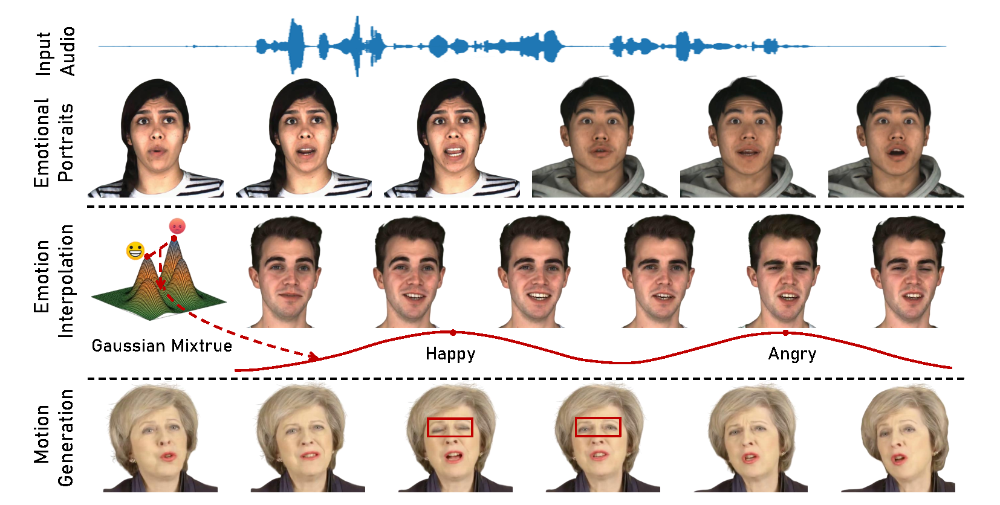
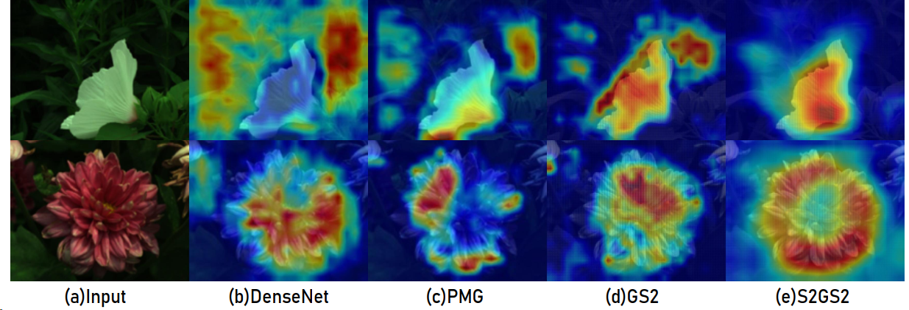
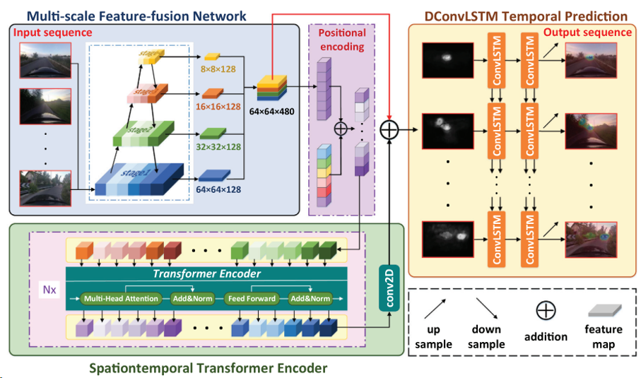

|
|
BiographyI'm a second-year Master student in Department of AeroSpace Information Engineering, Beihang University, advised by Prof. Xiaoyan Luo. Previously, I received the B.S. in School of Astronautics from Beihang University. I was a research intern at 3D Vision and Computational Photography Group in Tsinghua University from Sept.2022 to Jun.2024, under the guidance of Prof. Yebin Liu. |
Publications
|  |
GMTalker: Gaussian Mixture-based Audio-Driven Emotional Talking Video Portraits
Yibo Xia, Lizhen Wang, Xiang Deng, Xiaoyan Luo, Yebin Liu Arxiv 2024 Home arXiv |
|  |
S2GS2: Semi-Supervised GranularityAware Spectral-Spatial Feature Learning Framework for Fine-Grained Hyperspectral Image
Classification
Yibo Xia*, Lei Zhang*, Xiaoyan Luo, Sen Li, Yutao Hu, Ying Fu, Under Review |
|  |
Spatiotemporal module for video saliency
prediction based on self-attention
Yuhao Wang, Zhuoran Liu, Yibo Xia, Chunbo Zhu, Danpei Zhao Image and Vision Computing 2021 Paper |